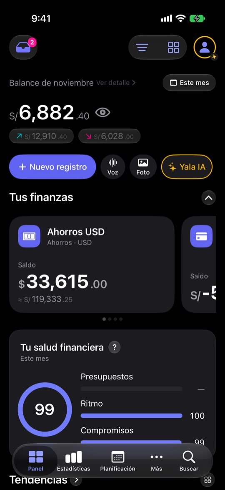
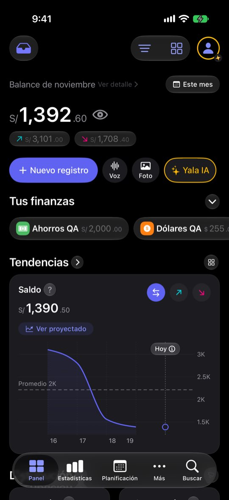

«Balance» no es lo que tienes, y lo que tienes no está a la vista
ficha con el reloj del simulador en el 20 de noviembre de 2026: cuatro cuentas (Ahorros USD $33,615 · Cuenta Principal S/ −53,738.91 · Efectivo S/ 380 · Tarjeta de crédito S/ 1,284.30 por pagar), balance de noviembre S/ 6,882.40 (entró S/ 12,910.40, salió S/ 6,028), saldo total S/ 64,690.04 y una nota de salud de 99. El saldo negativo de la Cuenta Principal sale de cómo la semilla reparte dos años de gastos; aquí sirve para ver qué hace el Panel con una cuenta en rojo. Ninguna cifra es de una persona real.Lo que se ve hoy
- Observado Capturas 01 y 26-29: «Balance» arriba, «Saldo» en Tendencias, sin total en «Tus finanzas»
- Observado Código: la cifra es ingresos − gastos (PanelHeroFigureLogic.swift:26)
- Hipótesis Quien no conoce la palabra «balance» lee el número como su dinero disponible



Alternativas
Todas con el mismo caso. Las cifras salen de las capturas salvo donde la maqueta dice «ilustrativo».
Renombrar la cifra
La cifra no cambia. El rótulo dice «Te quedó en noviembre» y una línea explica la resta.
A favor
- Cambio de textos: 16 idiomas y nada más
- No toca el cálculo ni la disposición
En contra
- Sigue sin mostrar lo que tienes
- «Te quedó» con un mes en negativo se lee raro: habría que decir «Gastaste S/ X más de lo que entró»
Total en «Tus finanzas»
Una fila fija «Tienes en total ≈ S/ 64,690.04 · 4 cuentas» encabeza la sección de cuentas, también plegada.
A favor
- El total aparece junto a las cuentas que lo forman
- El hero queda como está (no reabre su decisión)
- El conteo «4 cuentas» ya existe en el código (PanelTotalAccountsLogic.countableAccounts)
En contra
- Dos cifras grandes compiten arriba
- Con cuentas en varias divisas el total lleva «≈»
El hero dice lo que tienes
La cifra grande pasa a ser el saldo total; el resultado del mes baja a una línea debajo.
A favor
- Responde primero «¿cuánto tengo?»
- Desaparece el doble número casi igual
En contra
- El período del selector deja de mandar sobre la cifra grande
- Cambia el sentido de «Ver detalle» y del filtro de las píldoras
Interruptor en el hero
Un control «Este mes · Total en cuentas» encima de la cifra.
A favor
- Las dos lecturas en el mismo sitio
- Cada persona deja la que usa
En contra
- Un control más arriba del todo
- La persona que no lo toca nunca ve la otra cifra
Lado a lado
| A | B | C | D | |
|---|---|---|---|---|
| Muestra lo que tienes | No | Sí | Sí, primero | Si se toca |
| Toca el cálculo | No | No | Sí | No |
| Riesgo de confusión nueva | Bajo | Bajo | Medio | Medio |
Recomendación
B, con el texto de A si se quiere ir un paso más. B pone el total donde están las cuentas sin tocar el hero ni sus decisiones. C es la más clara para quien llega nuevo, pero cambia qué significa la cifra grande y su filtro: merece su propia decisión.
Decide Jürgen
¿Dónde vive «lo que tienes»: en «Tus finanzas» (B), en el hero (C) o en un interruptor (D)? ¿Se renombra «Balance» (A)?
Revisión por vistas 2.3 · Panel · 7-nov-2026. Capturas del simulador (build Debug de origin/2.3, iPhone 17 Pro e iPad Pro 13, iOS 27.2, modo oscuro, datos ficticios). Los siete perfiles son lentes simuladas, no entrevistas.